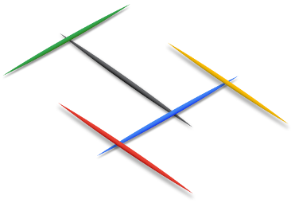

Your friend Cody-Jamal is an artist. He is working on a new sculpture concept made of toothpicks. Each toothpick has two ends. Each sculpture features a single foundational toothpick resting horizontally on the ground. Every other toothpick rests horizontally with its midpoint on one of the ends of exactly one other toothpick. This means each toothpick can have zero, one or two other toothpicks resting on it, forming a binary tree of toothpicks, with the foundational toothpick as the root. Toothpicks do not touch otherwise. Let t1 be any toothpick, and let t1 rest on t2, t2 rest on t3, and so on; there is an eventual tk that is the foundational toothpick.
For instance, in the following picture you can see a sculpture with 5 toothpicks. The black
toothpick is the foundational toothpick, resting on the ground. The green and blue toothpicks are
resting on the black toothpick, while the red and yellow toothpicks are resting on the blue one.

Cody-Jamal made exactly 1000 sculptures, each using exactly N toothpicks, that were exhibited for 1000 days in the largest 1000 cities in the world. As the grand finale, he is planning on placing the foundational toothpicks of 999 of his sculptures on open ends of toothpicks of other sculptures, effectively creating a larger version of a sculpture with the same concept, with 1000 × N total toothpicks. He plans on displaying it by placing the foundational toothpick of the structure on top of the Burj Khalifa in Dubai, the tallest building in the world.
Cody-Jamal is enthusiastically telling you his new plan, when your engineering mind notices that the high winds at that altitude will make the structure unstable, so you suggest gluing touching toothpicks together. Cody-Jamal's artistic vision, however, disagrees. The fragility of the construction is part of the conceptual appeal of the piece, he says. You two decide to compromise and use almost invisible carbon nanotube columns to support some toothpicks.A toothpick (foundational or not) is individually stable if and only if it is supported by a carbon nanotube column. Your math quickly shows that the whole structure can be considered stable if and only if, for each toothpick t that is not the foundational toothpick, either t is individually stable, or t rests on an individually stable toothpick.
Carbon nanotube columns are expensive, though. The cost of the column required to stabilize each toothpick may vary depending on several factors. You decide to write a computer program to assist in choosing a set of toothpicks good enough to make the structure stable while minimizing the sum of the cost of the carbon nanotubes required to stabilize each toothpick.
Toothpicks are numbered with integers between 0 and 1000N - 1, inclusive. Integers between 0 and 999 identify the foundational toothpicks of the original sculptures, and 0 is also the foundational toothpick of the large combined sculpture. The numbering of all of the other toothpicks is arbitrary. By way of construction, if you consider a graph made of all toothpicks with two toothpicks being adjacent if they touch each other, the N toothpicks corresponding to any original sculpture form a connected subgraph.
The input library is called "toothpick_sculpture"; see the sample inputs below for examples in your language. It defines three methods:
Output a single line with a single integer: the minimum sum of the cost to build the necessary carbon nanotubes and make the structure stable.
Recursive solutions, beware! The process stack size is limited to 8 MB and the JVM thread stack size is limited to 1MB. Attempting to change this programatically will result in a Rule Violation.
Number of nodes: 100. (Notice that the number of nodes is the same for both the Small and Large
datasets.)
Time limit: 6 seconds.
Memory limit per node: 512 MB.
Maximum number of messages a single node can send: 5000.
Maximum total size of messages a single node can send: 8 MB.
1 ≤ GetNumToothpicks() ≤ 106.
1 ≤ GetCost(i) < 109, for all i.
-1 ≤ GetToothpickAtEnd(i, e) < GetNumToothpicks() × 1000, for all i, e.
GetToothpickAtEnd(i, e) ≠ 0, for all i, e.
Let G be the graph with toothpicks as nodes and two nodes connected if and only if
the corresponding toothpicks touch in the sculpture:
G is a connected tree.
Removing the edges between toothpicks 1 through 999 and the toothpicks they are resting on
results in exactly 1000 connected components of GetNumToothpicks() nodes each.
GetToothpickAtEnd(i, 1) = -1, for all i.
No additional limits.
Note that the last sample case would not appear in the Small dataset.